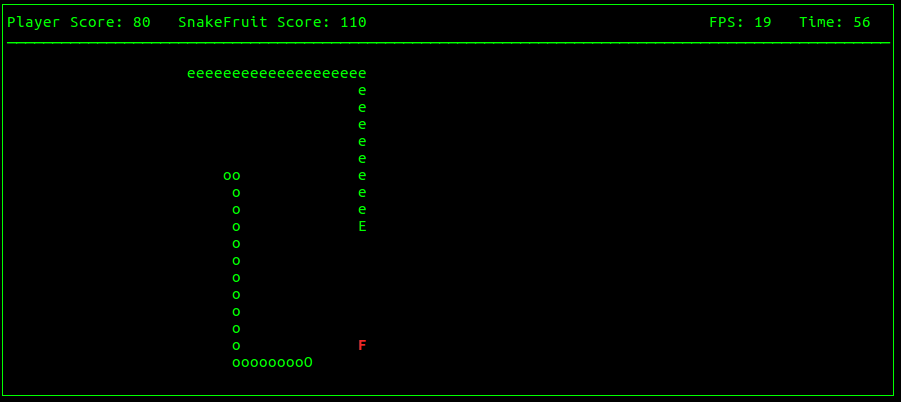

Teaching Assistant: Intro to C++
Description
I was a TA for this class for six semesters as an undergrad student, one of them as the lead TA. My main responsibilities were to lead students in labs, provide help at office hours, and help grade. Occasionally I was asked to make a small project, which can be seen below.
Mini Projects
Maze Downloader
In this lab that I created, students had to download a randomly generated maze, and build a character to walk through it. This was their first week on classes, so I gave them code to navigate to a website, submit a form, and download the webpage. They just had to use that to go to a website that generates random mazes, and download one. After that, they would build a Character class that could walk through the maze.
As the lead TA for one semester, I was asked to spend an hour or two each week coming up with one or two new lab problems. Near the end of the semester though, when the students finally knew enough to start making fun programs, I wanted to give them a more exciting lab. All of their past labs had been very mathematical and many students admitted to being borded. As a result, I thought the maze traversal and downloading would be a nice change of pace.
Code
Go to Github pageTools Used
- libCurl for the web navigation and form submitting
Images:

Snake
This lab is a spin off of the old arcade Snake game. The goal is to have a snake that goes around and eat fruit. When a fruit is eaten, the player gains points and the snake grows longer. Some of the fruit stays still, while some fruit moves around the screen. There is also an enemy 'SnakeFruit.' It acts like a snake as it tries to beat you to eating the fruit. It will grow longer and gain its own points, as well as speed the game up and make it harder for you play. However, it's also like a fruit, because if the player hits the head, it will be eaten like a fruit.
Similar to the last project, I wanted to give the students a fun lab that they would remember and enjoy. This was their last lab, and I really wanted the students to walk away from their first computer science class excited about programming. I think students are way more likely to take more computer science classes if they do projects that are fun and good learning experiences. As a result I ended up spending a lot of time trying to make this a good lab.
Code
Go to Github pageTools Used
- Ncurses for the terminal graphics and keyboard handling
Images:

Unit Tester
Right at the end of a semester, I was asked by the professor who I was a teaching assistant for, to try to make a framework for testing student's code. I only had a few days to try to make this. At the time I was trying to customize this to what we usually expect from the assignments in that class. It ended up being a little hard to understand though, and not as practical as I had hoped. Nowadays I would probably look at Google Test or something similar before making a custom setup.
This framework is currently only capable of testing IO and functions and right now, including int main(). It doesn't have the same support for classes yet. What it does though, is compiles the students code, and runs each test in a separate process, so if they crash, it's ok. It then returns a final summary of how many tests passed.
Code
Go to Github pageFeatures
Testing
- Create a 'Tester' object, and give it the student's function that you wish to test
- Add test cases to that Tester object by giving it the starting parameters, and what the return should be
- If you are testing standard IO, you can also give a test cases the input string it needs, and a regex of what the output should be
- Run all the tests, each in a separate process, so that crashes are fine
- Get a finally summary for a Tester object, to see how many tests succeeded
Handling Student's Code
- Create a 'Program' object that takes in the filename of the code you want to test
- The Program object will create a new copy of that file with int main() renamed (as to not conflict with the main() from the tester's code) and add the necessary includes for dynamic linking
- Will compile the code, or alert the user if it failed to compile
- Once compiled, you can give it the name of a function you want, and it will return it
Example
Program student_prgm("students_code.cpp");
if (!student_prgm.FullPrepare()) {
cout << "Failed to compile and dynamically load student's code" << endl;
exit(1);
}
// Get student's int main() function
typedef int (*stu_main)(int, char**);
stu_main f = (stu_main) student_prgm.GetFunction("student_main");
// Create a tester object for that int main(). Lets say their code should
// just allow the user to enter their name, and then print "Hello, ____!"
// with their name in it.
// IOTester
// iotester(test_name, test_function)
IOTester iotester("Print name", f);
// Now, set up test cases
int test_argc = 0
char** test_argv = nullptr;
// test_name, expected_ret, input, output regex, arg 1, arg2
iotester.AddTest("Bob's Test", 0, "Bob", "Hello, Bob!\\s+", test_argc, test_argv);
iotester.AddTest("Sam Smiths's Test", 0, "Sam Smith", "Hello, Sam Smith!\\s+", test_argc, test_argv);
iotester.RunAllTests();
iotester.GetSummary(cout);